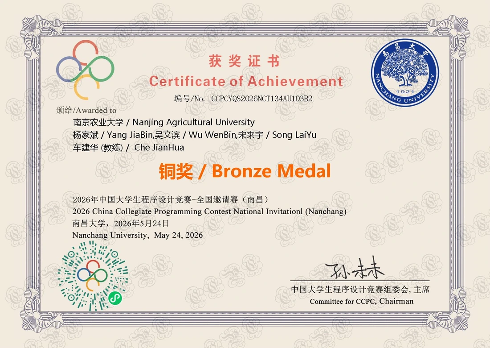
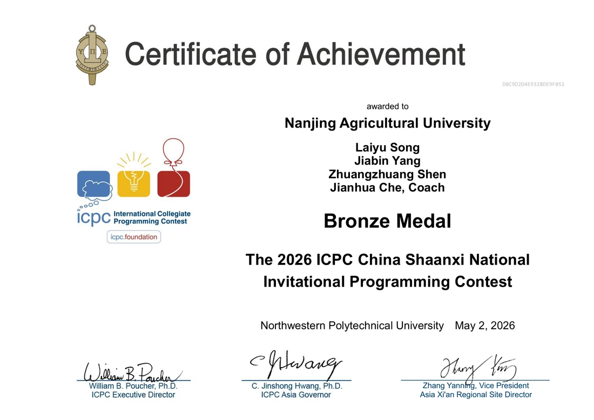
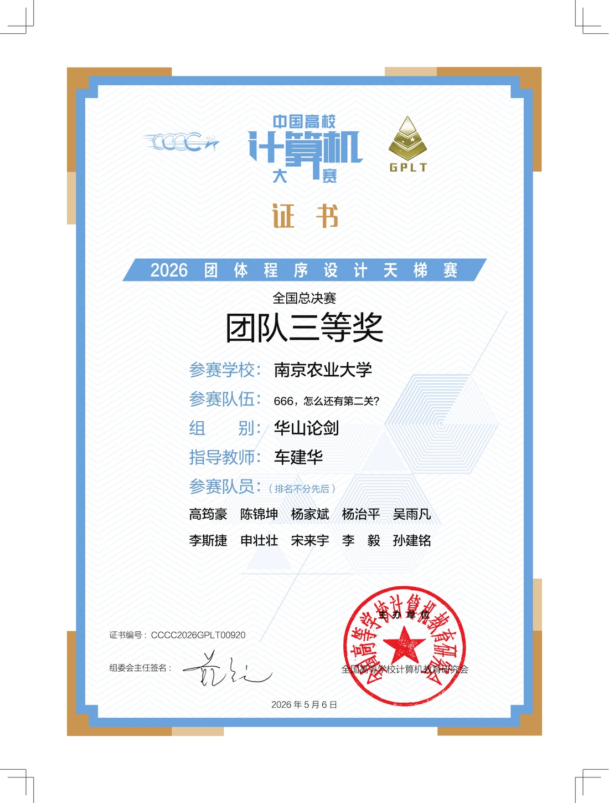
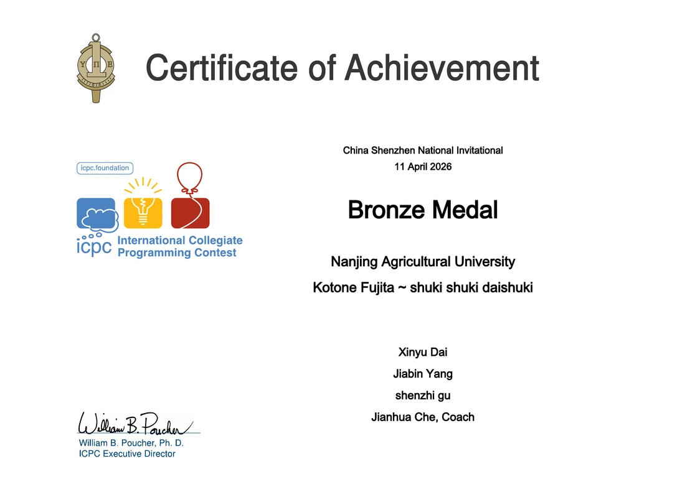
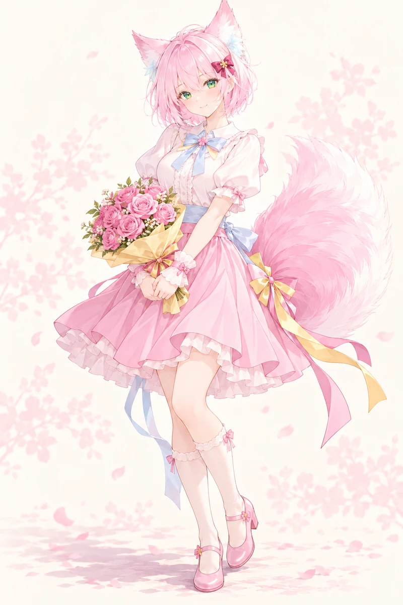

已上线
osu! 数据分析
osu-data-analysis
osu-data-analysis
osu-tournament-data

查看证书
查看证书
查看团队证书南京农业大学 · 华山论剑组
证书已收录

查看证书也叫棠棠
我的 OC，是一位单尾狐族的花店店员。樱粉色短发、翠绿色眼睛，性格温柔细心，也有一点俏皮。
她想开一家小花店，店里要有书架和靠窗的座位。首页放的是她陪着读书的立绘，这里还有全身立绘和几张表情包。

Welcome to osu!